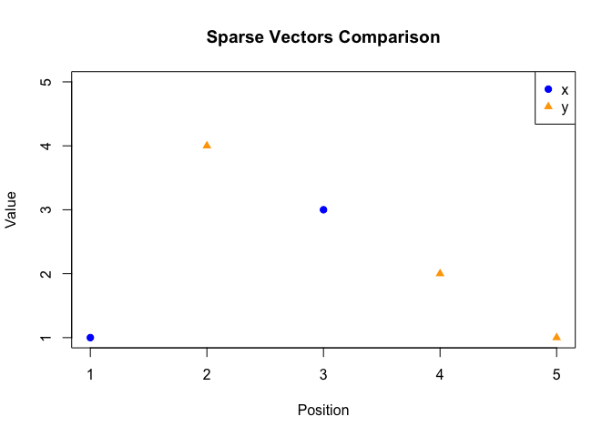

Description
sparseMethods provides an S4 class, sparse_numeric, for storing numeric vectors by keeping only the nonzero entries and their positions, sparse vectors. The package implements:
Arithmetic on sparse vectors: +, -, *
Sparse functions: sparse_add(), sparse_sub(), sparse_mult(), sparse_crossprod(),
Vector summaries: mean(), norm(), standardize(),
Visualization with plot(), Custom printing via show()
This package demonstrates how to define S4 classes, generics, and methods in R.
Installation
You can install the development version of sparseMethods from GitHub using:
r # install.packages(“devtools”)
devtools::install_github(“DanaNguyen18/sparseMethods”)
Example
This is a basic example showing you the methods.
library(sparseMethods)
#>
#> Attaching package: 'sparseMethods'
#> The following objects are masked from 'package:base':
#>
#> mean, norm
# Create sparse vectors
x <- as(c(1, 0, 3, 0, 5), "sparse_numeric")
y <- as(c(0, 4, 0, 2, 1), "sparse_numeric")
# Print the sparse vectors
x
#> Here is an object of class 'sparse_numeric'
#> The length is 5Pos:Value 1 : 1, Pos:Value 3 : 3, Pos:Value 5 : 5
y
#> Here is an object of class 'sparse_numeric'
#> The length is 5Pos:Value 2 : 4, Pos:Value 4 : 2, Pos:Value 5 : 1
# Arithmetic
x + y
#> Here is an object of class 'sparse_numeric'
#> The length is 5Pos:Value 1 : 1, Pos:Value 2 : 4, Pos:Value 3 : 3, Pos:Value 4 : 2, Pos:Value 5 : 6
x - y
#> Here is an object of class 'sparse_numeric'
#> The length is 5Pos:Value 1 : 1, Pos:Value 2 : -4, Pos:Value 3 : 3, Pos:Value 4 : -2, Pos:Value 5 : 4
x * y
#> Here is an object of class 'sparse_numeric'
#> The length is 5Pos:Value 5 : 5
# Cross product (dot product)
sparse_crossprod(x, y)
#> [1] 5
# Means and norms
mean(x)
#> [1] 1.8
norm(x)
#> [1] 5.91608
# Standardization
standardize(x)
#> Here is an object of class 'sparse_numeric'
#> The length is 5Pos:Value 1 : -0.412568498503517, Pos:Value 2 : -0.928279121632914, Pos:Value 3 : 0.618852747755276, Pos:Value 4 : -0.928279121632914, Pos:Value 5 : 1.65027399401407
# Plot
plot(x, y)
#Show
show(x)
#> Here is an object of class 'sparse_numeric'
#> The length is 5Pos:Value 1 : 1, Pos:Value 3 : 3, Pos:Value 5 : 5